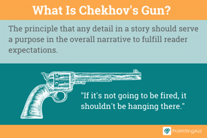
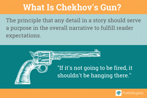

Background
I was born in Kingsport, TN and have lived there all my life.
I attended Andrew Johnson Elementary School, Robinson Middle School, and Dobyns-Bennett High School.
I also was accepted into East Tennessee State University and received by B.S. in Information Technology.
I am currently looking for a job but it looks like 2024 is not merciful. So I made this website.
I attended Andrew Johnson Elementary School, Robinson Middle School, and Dobyns-Bennett High School.
I also was accepted into East Tennessee State University and received by B.S. in Information Technology.
I am currently looking for a job but it looks like 2024 is not merciful. So I made this website.
About Me, Specifically
RaceAsian
GenderMale (He/Him)
"Down There"Can Pee Standing Up
Myers-Briggs
Personality
INFJ (Advocate)
Personality
INFJ (Advocate)
Ennagram Test
Type 1 - 10.4
Type 2 - 8.4
Type 6 - 8.4
Type 4 - 8
Type 9 - 8
Type 5 - 7.7
Type 3 - 7
Type 2 - 8.4
Type 6 - 8.4
Type 4 - 8
Type 9 - 8
Type 5 - 7.7
Type 3 - 7
AllieganceUnited States
S.P.E.C.I.A.L.
Strength: 3
Perception: 3
Endurance: 7
Charisma: 2
Intelligence: 8
Agility: 7
Luck: 5
Perception: 3
Endurance: 7
Charisma: 2
Intelligence: 8
Agility: 7
Luck: 5
What I Want To Do
I have a strong passion in making video games, anime,
animation, music, and AI learning. In the future, I would like
to effectively learn to use Blender, Unity, and Unreal Engine.
As of now, I have only a classroom-level understanding of all 3
of these.
My goal in life is to make the world better. I want to give people hope in these times. I look up to games like Undertale and Fire Emblem: Three Houses, for example.
In high school, I discovered that I have a natural talent for writing stories. Whether that includes Poetry or Narratives. I am also a strong proponent and user of Chekhov's Gun.

My goal in life is to make the world better. I want to give people hope in these times. I look up to games like Undertale and Fire Emblem: Three Houses, for example.
In high school, I discovered that I have a natural talent for writing stories. Whether that includes Poetry or Narratives. I am also a strong proponent and user of Chekhov's Gun.

My Favorite...
Video Games
1. Fire Emblem: Three Houses
2. Mario Kart 8
3. The Sims 4
4. Captain Tsubasa: Rise of New Champions
5. Kingdom Come: Deliverance
Animes
1. Ace Attorney
2. Death Note
3. One Punch Man
4. Attack on Titan
5. The Disastrous Life of Saiki K.
Soundtracks
1. Title Intro (Fire Emblem Echoes: Shadows of
Valentia)
2. Fódlan Winds (Fire Emblem: Three Houses)
3. Squad Loadout (XCOM 2)
4. Duty Calls (Sonny 1)
5. Stand and Defend (Club Penguin)
Songs
1. Karma - Bump of Chicken
2. Guren no Yumiya - Linked Horizon
3. Bad Apple!! - Alstroemeria Records
4. Harujion - YOASOBI
5. It Has To Be This Way - Metal Gear Rising:
Revengeance
Characters
1. Luke Fon Fabre [Tales of the Abyss]
2. Dimitri Alexandre Blaiddyd [FE: Three Houses]
3. Light Yagami [Death Note]
4. Luigi [Mario & Luigi RPG]
5. Yuri Lowell [Tales of Vesperia]
Childhood
Here's a few games I recommend trying out if you download Flashpoint Archive:
The Last Stand: Dead Zone
Unfortunately, this game was taken down along with Adobe
Flash Player. It could not be preserved because the game
relied on a server connection to play. There are no legacy
servers for this game.
Raze 2
No Remastered Version - Use Flashpoint Archive
Warfare 1917
No Remastered Version - Use Flashpoint Archive
Sonny 1
Reimagined Version on Steam
StormWinds 1.5
No Remastered Version - Use Flashpoint Archive


Copyright Michael Ng, 2024